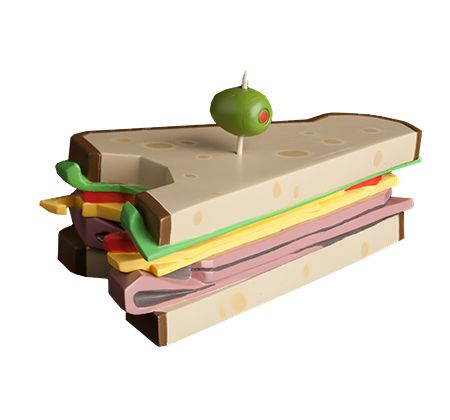
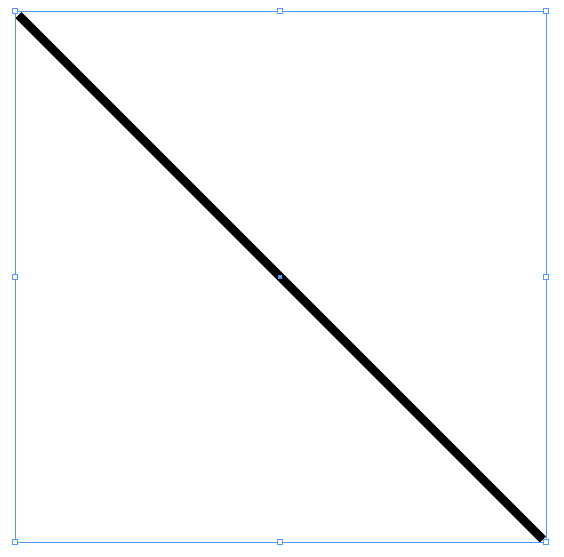
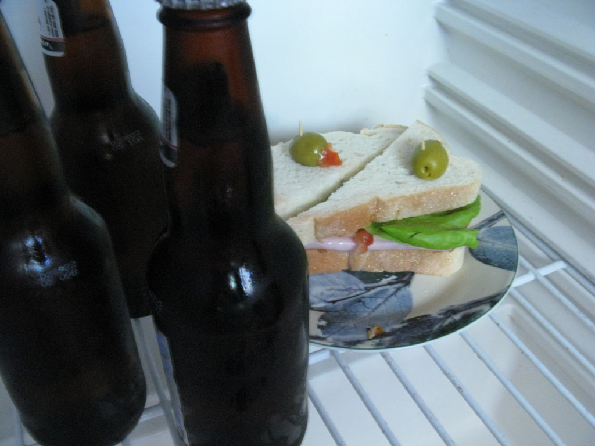

Team Fortress 2 Sandvich: Edible Device

Description
The Sandvich, known in full as the Sandvich Edible Device, is an unlockable secondary weapon for the Heavy.
When eaten, it gradually replenishes up to 300 health over a four second duration with no overheal.
Ingredients
- 2 slices of bread (prefferably whole grain wonder bread)
- 2-3 slices of swiss cheese (any cheese will do)
- 1 green olive
- 2 thin slices of tomato
- 1 stick of balogna (salami or ham work just as well)
- 3 leaves of lettuce (or spinach! this will make you strong as heavy)
Steps: Assembling the Sandwich
- Cut the balogna into 6 slices (half an inch thick) and place 3 on the bottom bread.
- Add 3 slices of cheese
- Place 3 leaves of lettuce on top of the cheese
- Add the 3 slices of tomato on top of the lettuce
- put the remaining 3 slices of balogna on the tomato
- Place the bread on top of it all
- cut the sandvich diagonally so it makes 2 sandviches (share the love!)
(here is what diagonal looks like)

- pretend the olive is the guy who took cp_snowplow out of the EOTL update, and impale it with a toothpick.
- Stab one of the 2 sandviches with the olive on a stick.
- enjoy
Congratulations! You just made a sandvich! Heavy would be proud!
Servings 1-2 people
eat this beautiful sandvich with a nice coolberg and be fueled for your next battle in the badlands!
